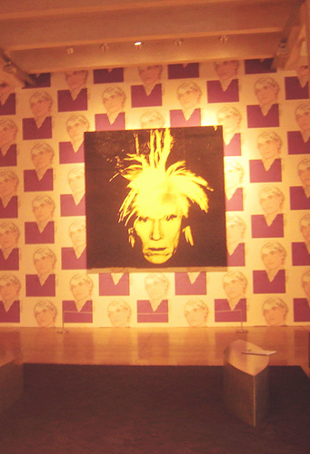
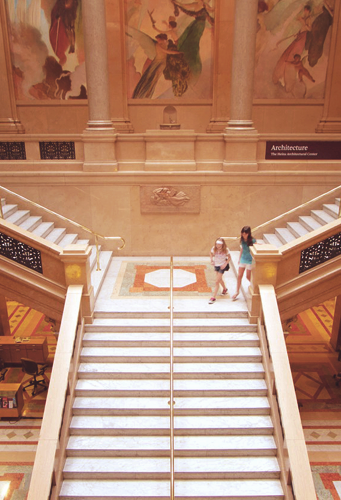
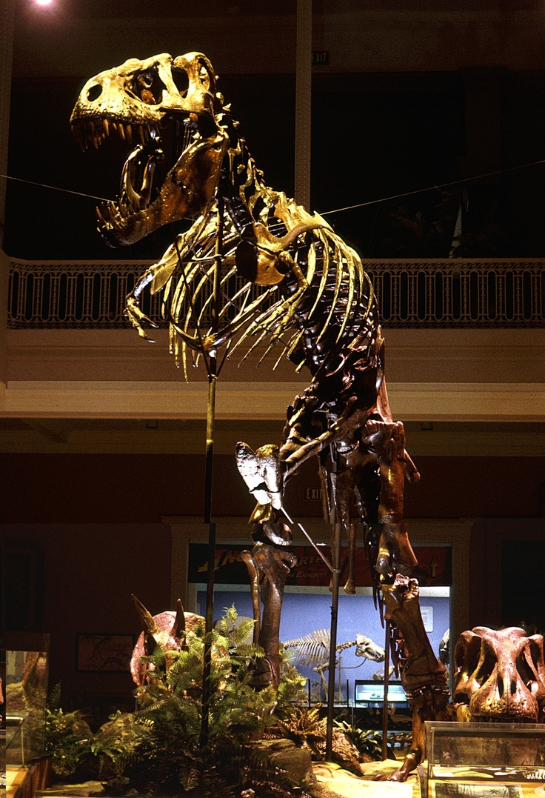
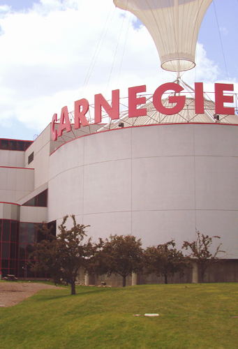

Andy Warhol Museum
One of Carnegie Mellon's four museums. It houses the history and works of the famed artist, Andy Warhol.
Carnegie Museum of Arts
One of Carnegie Mellon's four museums. This place is an art gallery that serves to inspire and invite society into the art world.
Carnegie Museum of Natural History
One of Carnegie Mellon's four museums. This museum contains a collection of scientific artifacts to inform the public of the world's natural heritage and preservation.